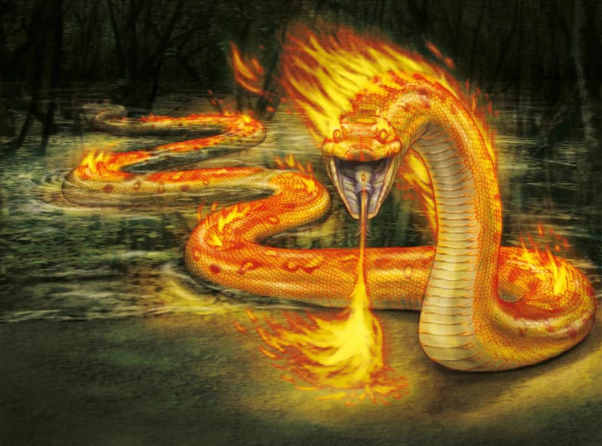
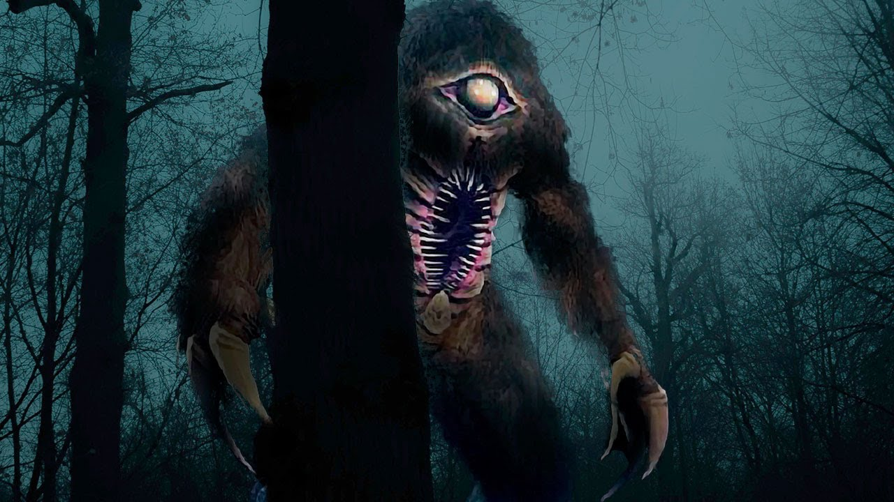
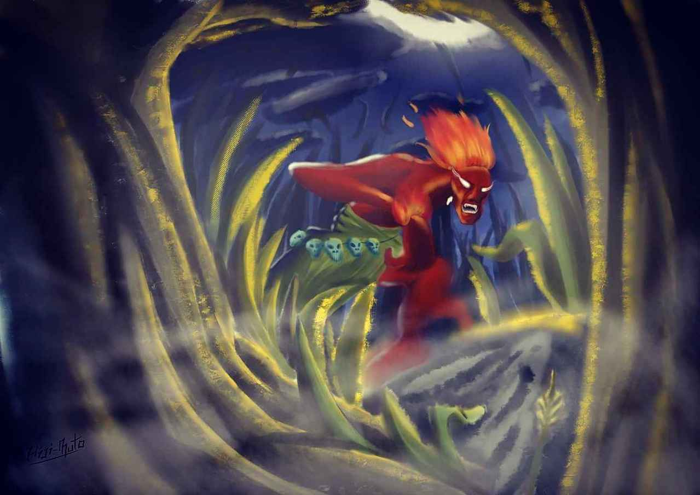
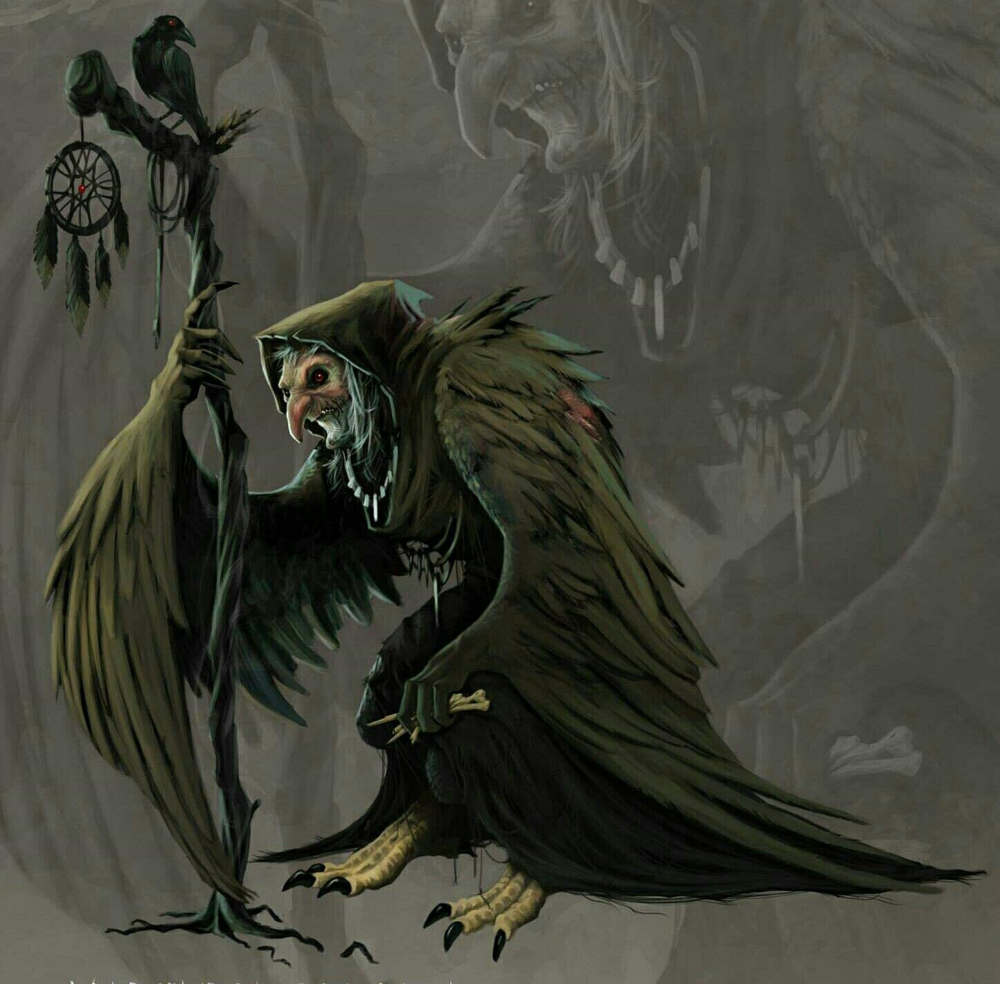

18 de junho de 2024
A lenda do açaí em Belém do Pará é uma história que mistura elementos da cultura local com a riqueza natural da região amazônica. O açaí é uma fruta nativa da Amazônia, amplamente consumida na região devido aos seus benefícios para a saúde e ao seu sabor único. A lenda do açaí geralmente envolve uma história de origem que destaca a importância da fruta para as comunidades locais.
Uma versão popular da lenda conta que, há muitos anos, as tribos indígenas da região amazônica enfrentavam uma grande escassez de alimentos. Em meio à fome e ao desespero, um jovem guerreiro recebeu uma visão durante um sonho. Na visão, ele foi instruído a colher os frutos de uma palmeira alta e escura que crescia nas margens dos rios.
O jovem guerreiro seguiu as instruções do sonho e encontrou a palmeira, cujos frutos eram pequenos e escuros. Ele trouxe os frutos de volta para sua tribo, onde descobriu que eram ricos em nutrientes e forneciam energia e vitalidade. Com o tempo, o consumo regular desses frutos, que ficaram conhecidos como açaí, ajudou a tribo a superar a fome e a prosperar.
Assim, a lenda do açaí se espalhou pela região, destacando a importância dessa fruta como uma fonte de alimento e sustento para as comunidades locais. Em Belém do Pará, o açaí se tornou um símbolo cultural e econômico, sendo consumido em diversas formas, como sucos, sorvetes e principalmente na forma de um prato conhecido como "açaí na tigela", servido com frutas e granola.
Hoje, a lenda do açaí continua a ser contada e celebrada na região, lembrando a conexão profunda entre as pessoas da Amazônia e a natureza que as rodeia.
18 de junho de 2024
A lenda do boto é uma das mais famosas e antigas da região amazônica. Contada em várias comunidades ribeirinhas ao longo dos rios amazônicos, especialmente no Brasil, essa lenda envolve um golfinho de água doce conhecido como boto cor-de-rosa.
De acordo com a lenda, durante as noites de lua cheia, o boto cor-de-rosa se transforma em um belo e charmoso homem. Ele sai do rio e se aproxima das festas e celebrações nas comunidades ribeirinhas. Lá, ele seduz as mulheres com sua aparência encantadora e seu jeito sedutor.
O boto é descrito como um homem extremamente atraente, sempre vestido de branco e usando um chapéu para esconder o furo que tem no alto da cabeça, característica do golfinho. Ele dança, canta e flerta com as mulheres, muitas vezes escolhendo uma delas para passar a noite.
Após a noite de paixão, o boto retorna ao rio e retoma sua forma original. A mulher, por sua vez, descobre que está grávida, mas não sabe quem é o pai da criança, já que o encontro com o boto foi um segredo.
Essa lenda do boto é transmitida de geração em geração na Amazônia e se tornou parte integrante da cultura e folclore da região. Além de ser uma história fascinante, ela também serve como uma maneira de explicar situações inesperadas, como uma gravidez não planejada, em comunidades ribeirinhas.
18 de junho de 2024
A lenda do Boitatá é uma das mais fascinantes e antigas do folclore brasileiro, especialmente na região amazônica. Essa lenda envolve uma criatura mítica que protege as florestas contra aqueles que as desrespeitam e também é uma explicação para fenômenos naturais como os incêndios florestais.
De acordo com a lenda, o Boitatá é uma serpente de fogo de proporções enormes, com olhos brilhantes e uma pele flamejante. Ele vive nas profundezas das florestas e aparece à noite como uma luz intensa, irradiando calor e poder. Seu corpo em chamas ilumina as trevas, e o som de seu rugido ecoa pela floresta.
O Boitatá é temido e respeitado pelos povos indígenas e ribeirinhos da Amazônia, pois é considerado um guardião da natureza. Ele protege as florestas e os animais contra aqueles que os ameaçam, incluindo caçadores e invasores. Se alguém tentar causar danos à natureza, o Boitatá aparece para assustá-los com seu fogo e seu rugido ensurdecedor.
Além de proteger a floresta, o Boitatá também é uma explicação para os incêndios florestais. Segundo a lenda, quando o Boitatá se move pela floresta, seu corpo em chamas pode acidentalmente incendiar a vegetação ao seu redor. Assim, os incêndios são vistos como um sinal da presença do Boitatá e uma advertência para aqueles que desrespeitam a natureza.
Essa lenda do Boitatá é transmitida oralmente há séculos na região amazônica e continua a ser uma parte importante do folclore brasileiro. Ela serve como um lembrete da importância de preservar e proteger o meio ambiente e respeitar os seres que o habitam.
18 de junho de 2024
A lenda da Iara, também conhecida como "Mãe das Águas" ou "Sereia dos Rios", é uma das mais famosas do folclore brasileiro, especialmente na região amazônica. Essa lenda envolve uma bela mulher que habita os rios e encanta os viajantes com sua voz melodiosa.
De acordo com a lenda, Iara era originalmente uma bela índia, filha de um líder tribal. Ela era conhecida por sua beleza e encanto, além de ser uma excelente nadadora e mergulhadora. Porém, sua beleza despertou a inveja de seus irmãos, que, temendo que ela os superasse na liderança da tribo, planejaram se livrar dela.
Um dia, durante um mergulho no rio, Iara ouviu uma voz misteriosa chamando-a para o fundo das águas. Ela seguiu a voz e encontrou um ser sobrenatural, que lhe ofereceu o poder de se tornar a rainha dos rios em troca de sua vida humana. Seduzida pela promessa de poder e liberdade, Iara aceitou a oferta e se transformou em uma bela sereia.
Desde então, Iara passou a habitar as águas dos rios, seduzindo os homens com sua beleza e sua voz hipnotizante. Aqueles que ouviam seu canto eram atraídos para as profundezas das águas, onde eram enfeitiçados e nunca mais voltavam.
A lenda da Iara serve como uma metáfora para os perigos das águas e também como uma explicação para os desaparecimentos misteriosos ao longo dos rios. Ela é uma figura ambígua, ao mesmo tempo sedutora e perigosa, representando a dualidade da natureza e os mistérios das águas.
Essa lenda continua a ser contada e recontada na região amazônica e em todo o Brasil, mantendo viva a rica tradição do folclore brasileiro.
18 de junho de 2024
A lenda do Mapinguari é uma das mais intrigantes e assustadoras do folclore amazônico. Essa criatura lendária é descrita como uma espécie de gigante peludo, com um único olho no meio da testa e uma boca enorme no meio do peito.
De acordo com a lenda, o Mapinguari habita as profundezas da floresta amazônica, especialmente em áreas remotas e pouco exploradas. Ele é temido pelos povos indígenas e ribeirinhos da região, pois é considerado uma criatura feroz e carnívora, capaz de devorar qualquer coisa que cruze seu caminho.
O Mapinguari é conhecido por sua força sobre-humana e sua capacidade de se camuflar na mata, tornando-se quase invisível para aqueles que o procuram. Ele é descrito como um ser solitário e recluso, que prefere evitar o contato com os humanos, mas que pode se tornar agressivo se sentir ameaçado.
Além de sua aparência assustadora, o Mapinguari também é associado a diversos fenômenos sobrenaturais, como sons estranhos na floresta, desaparecimentos misteriosos e avistamentos inexplicáveis. Ele é considerado uma espécie de guardião da floresta, protegendo-a contra intrusos e invasores.
A lenda do Mapinguari continua a intrigar e assombrar as pessoas que habitam a região amazônica, alimentando o imaginário popular e servindo como uma maneira de explicar o desconhecido e o inexplicável na vastidão da floresta. Mesmo em tempos modernos, relatos de avistamentos e encontros com o Mapinguari ainda são relatados, mantendo viva essa fascinante lenda do folclore brasileiro.
18 de junho de 2024
A lenda do Curupira é uma das mais conhecidas e fascinantes do folclore brasileiro, especialmente na região amazônica. Essa criatura lendária é descrita como um ser pequeno, com cabelos de fogo, pés virados para trás e uma aparência selvagem.
De acordo com a lenda, o Curupira é o guardião das florestas e dos animais, protegendo-os contra aqueles que desrespeitam a natureza. Ele é conhecido por sua habilidade de se camuflar na mata e sua capacidade de confundir e desorientar os caçadores e lenhadores que tentam invadir seu território.
O Curupira é um ser travesso e brincalhão, mas também pode se tornar feroz e vingativo se alguém ameaçar as florestas ou os animais. Ele é especialmente protetor das árvores e plantas, punindo aqueles que as cortam ou destroem de forma irresponsável.
Uma das características mais marcantes do Curupira é seus pés virados para trás, que deixam rastros confusos na floresta e confundem seus perseguidores. Ele também é conhecido por imitar os sons dos animais da floresta para atrair os caçadores para longe de seus territórios.
Apesar de sua aparência assustadora, o Curupira é visto como um guardião benevolente da natureza, que protege as florestas e os animais da ganância e da destruição humanas. Ele é reverenciado e respeitado pelos povos indígenas e ribeirinhos da região, que o consideram um símbolo da sabedoria e do poder da natureza.
Essa lenda do Curupira continua a ser contada e recontada nas comunidades amazônicas e em todo o Brasil, mantendo viva a rica tradição do folclore brasileiro e ensinando importantes lições sobre o respeito e a preservação do meio ambiente.
18 de junho de 2024
A lenda da "Mulher do Táxi" em Belém do Pará narra a história de uma mulher enigmática que se tornou uma figura lendária na cidade. Segundo relatos, essa mulher costumava sair à noite e, ao retornar para casa, sempre escolhia o mesmo táxi e o mesmo motorista para levá-la. Durante a viagem, ela permanecia em silêncio, sem dizer uma palavra.
No entanto, ao chegar ao seu destino, ela desaparecia misteriosamente do carro sem pagar a corrida. Os motoristas de táxi que tiveram a experiência de levá-la relatam que, ao chegarem ao endereço indicado, a mulher simplesmente sumia do veículo, deixando-os perplexos e assustados.
Essa história se espalhou pela cidade e logo se tornou uma lenda urbana, alimentando o imaginário popular e despertando o medo e a curiosidade das pessoas. Muitos acreditam que a "Mulher do Táxi" seja uma aparição sobrenatural, talvez o espírito de alguém que sofreu alguma tragédia ou injustiça naquelas ruas.
Apesar de nunca ter sido confirmada oficialmente, a lenda da "Mulher do Táxi" continua a ser contada e recontada em Belém do Pará, acrescentando um toque de mistério e suspense às noites na cidade. Ela serve como um lembrete para os motoristas de táxi e para todos os que ouvem a história sobre os mistérios que podem estar escondidos nas sombras da noite.
18 de junho de 2024
A Cuca é uma figura lendária do folclore brasileiro, especialmente conhecida por assustar crianças desobedientes e fazê-las dormir cedo. Ela é descrita como uma velha feia e malvada, com corpo de jacaré e rosto de bruxa, que vive em matas escuras e pantanosas.
A lenda da Cuca conta que ela sai à noite em busca de crianças travessas para levá-las embora, geralmente para cozinhar e comer. Por isso, os pais costumam alertar seus filhos para se comportarem bem e não ficarem fora de casa até tarde, senão a Cuca pode pegá-los.
Essa lenda é contada em todo o Brasil, com variações regionais, mas o objetivo é sempre o mesmo: ensinar as crianças a obedecerem seus pais e a terem cuidado com estranhos. A Cuca representa o medo do desconhecido e a importância de seguir regras e avisos para se manter seguro.
18 de junho de 2024
A lenda da Matinta Perera é uma das mais conhecidas e assustadoras do folclore brasileiro, especialmente na região Norte do país. Ela é uma figura do imaginário popular, uma espécie de bruxa que se transforma em pássaro durante a noite para assombrar e amaldiçoar as pessoas.
A história varia de acordo com a região, mas geralmente é contada como a de uma mulher que praticou feitiçaria ou bruxaria em vida e, após sua morte, retorna como um espírito maligno para se vingar ou aterrorizar os vivos. Durante a noite, ela se transforma em uma ave de coruja ou de outro pássaro noturno e voa em busca de suas vítimas.
A Matinta Perera é descrita como uma velha muito feia e enrugada, com olhos vermelhos e brilhantes que podem hipnotizar quem a encara. Seu grito estridente é aterrorizante e pode ser ouvido à distância, anunciando sua presença e pressagiando desgraças.
As histórias sobre a Matinta Perera são frequentemente usadas para assustar crianças desobedientes e também para explicar acontecimentos inexplicáveis, como doenças súbitas ou mortes repentinas. Embora seja uma lenda, muitas pessoas acreditam na existência real dessa criatura sobrenatural e evitam falar seu nome em voz alta, por medo de atrair sua atenção.